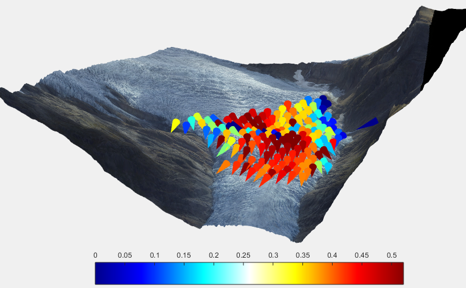

ImGRAFT
An image georectification and feature tracking toolbox for MATLAB
This software is open source (See licensing details elsewhere). In addition to the formal licensing terms, We would greatly appreciate an acknowledgement. Preferably in the form of a citation and a link to the web-page.
Citation: Messerli, A. and Grinsted, A. (2015), Image GeoRectification And Feature Tracking toolbox: ImGRAFT, Geosci. Instrum. Method. Data Syst., 4, 23-34, doi:10.5194/gi-4-23-2015
Features
- Feature tracking between image pairs using template matching.
- Full processing line from feature tracking to georectification.
- Distorted camera model. This allows the use of cheaper camera setups.
- Avoiding traditional image registration as a pre-processing step as it degrades the images due to resampling. ImGRAFT will instead optimize camera view for each image.
- Projecting between pixel and real world coordinates. 2D ↔ 3D
- Easily scriptable as it is a toolbox.
- Minimal dependencies. (No other toolboxes required).
- Inputs to feature tracking: two images
- Inputs to georectification: a DEM and some ground control points.
We hope you will find this package useful. We would be grateful for any feedback and example use-cases.
Authors: Aslak Grinsted & Alexandra Messerli

Licensing
The majority of the code is licensed under a very permissive MIT license, but some routines and example data are licensed under other terms. See licensing details in LICENSE.txt and individual files.
This software package includes the following open source codes licensed under other terms:
- LMFnlsq.m
- Copyright Miroslav Balda. This is an implementation of the Levenberg-Marquardt algorithm as modified by Fletcher. It is used in the least squares optimization of the camera parameters. See licensing details in LMFnlsq.
Acknowledgements
This software has been developed at Centre for Ice and Climate, Niels Bohr Institute, University of Copenhagen as part of the SVALI project. SVALI is a part of the Top-level Research Initiative (TRI), which is a major Nordic collaborative venture for studies of climate, energy and the environment. We are also grateful to Miriam Jackson and NVE who has helped facilitate the Engabreen fieldwork and contributed with data.